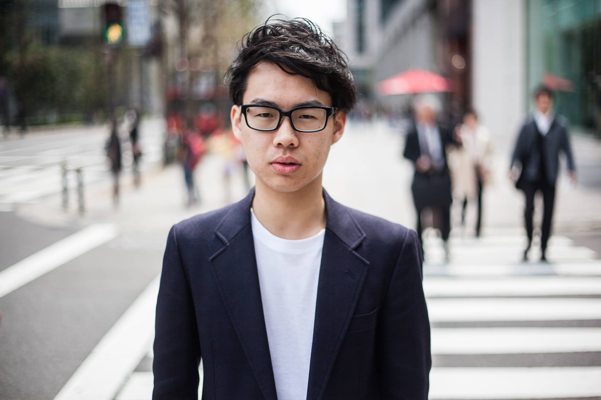
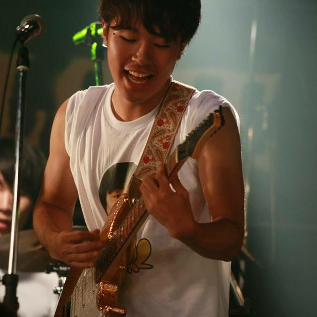
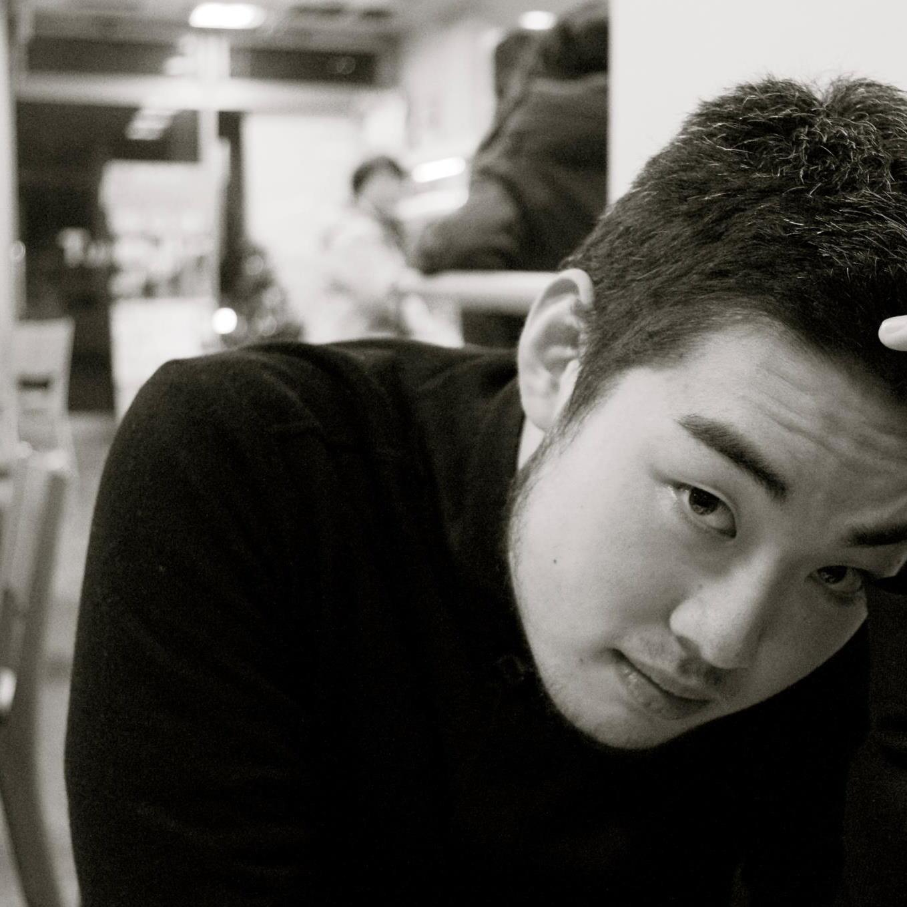
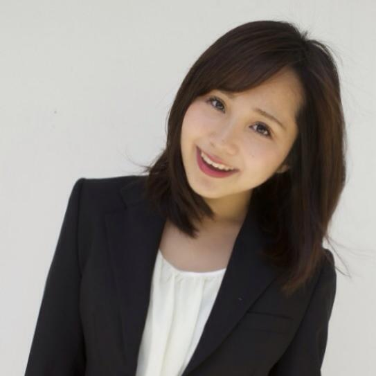
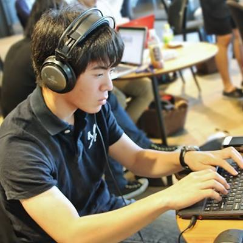
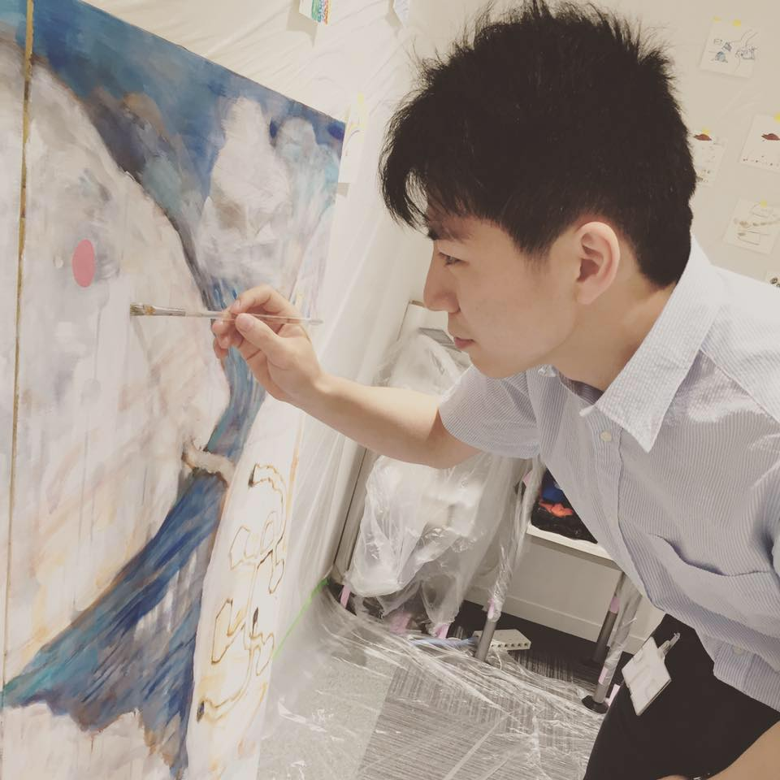
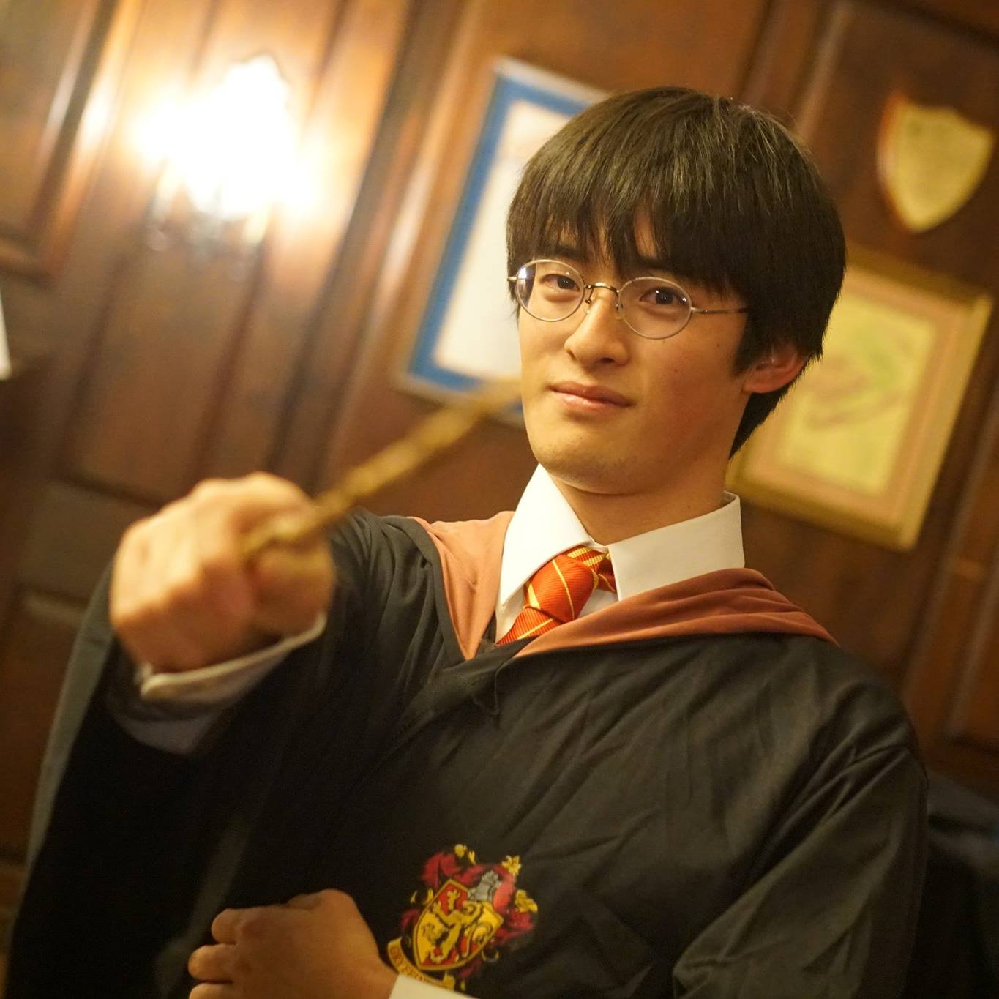
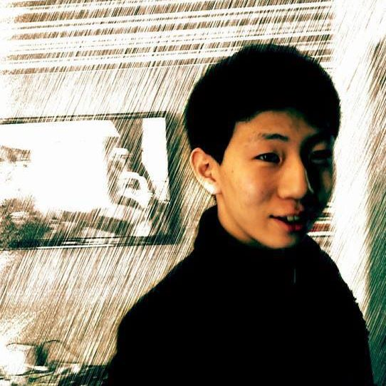

About
ハーバード、MIT, BU, Tuftsなど、世界の一流大学が集まっている都市、ケンブリッジ、ボストン。この街には、「海外へ留学したい、世界で学びたい」という人たちや、「とにかく世界一と呼ばれる場所にいって、いろんな人に会って刺激をうけたい」という方など、いろんな人が集まってきます。ただ残念ながら、旅行に来ただけではこの街には建物があるだけで、なかなか本来の街の良さを体験する事ができません。この街の良さは何か、それは一言で「そこにいる人々」です。ここにいる日本人は、日本から離れる一大決心をし、世界で勝負をする心構えをもった人たちです。
僕（北川 拓也）はもう８年もケンブリッジに住んでいますが、今でもここにいる人とあうと、そのスケールの大きさに感動します。日本では会えない人たちがここにはいる。日本では体験できないことがここにはある。それを身にしみて知った僕は、是非日本の１０〜３０代の方々に、この素晴らしい土地と人を見に来てもらいたい、と思い、シェアハウスを設立致しました。
ケンブリッジにいらっしゃった方々にこの場所にいる人と環境の素晴らしさが共感して頂くためには、同じ空気を吸ってもらうのが一番だと思いました。僕らが住んでいる場所に泊まってもらい、雰囲気を感じ取ってもらうためにこのシェアハウスを提供して行こうと思います。これからこの家が、ケンブリッジと日本をつなぐ場所として存在していけたら、と思います。
僕（北川 拓也）はもう８年もケンブリッジに住んでいますが、今でもここにいる人とあうと、そのスケールの大きさに感動します。日本では会えない人たちがここにはいる。日本では体験できないことがここにはある。それを身にしみて知った僕は、是非日本の１０〜３０代の方々に、この素晴らしい土地と人を見に来てもらいたい、と思い、シェアハウスを設立致しました。
ケンブリッジにいらっしゃった方々にこの場所にいる人と環境の素晴らしさが共感して頂くためには、同じ空気を吸ってもらうのが一番だと思いました。僕らが住んでいる場所に泊まってもらい、雰囲気を感じ取ってもらうためにこのシェアハウスを提供して行こうと思います。これからこの家が、ケンブリッジと日本をつなぐ場所として存在していけたら、と思います。
Member
-

中村くん
-

久保直生
-

丹原健翔
-

志村侑紀
-

長谷川陸央
-

楠正宏
-

高島崚輔
History
シェアハウス開始
北川拓也（現楽天取締役）によりシェアハウス設立。当時の住人：永島岳（ハーバード応用物理学科博士課程）、井上卓馬（MIT物理学部博士課程）、友枝健太郎（ハーバード経済学部博士課程）
2012年7月グスト50人突破
2013年11月シェアハウス休止
ゲストの宿泊を休止。ボストンを訪れる日本人のHubとしての役割は継続。
2014年10月Blog
Vision
「新しい普通を創る」 技術は発展し、多様性に富み、これ以上ないほど便利な世の中になりつつある。今を生きる人には何もかもが揃っている。しかし、人は「生きる」のに必要なものを見失いつつあるのかもしれない。お金＝幸せだと信じ、時間に追われて「生きる」ということがわからなくなる。 私たちは、世の中に「希望」を見出し、「夢」を持てる未来を目指すため、現代に合う「新しい普通」を見つけ出します。
Mission
「価値観＋価値観＝・・・？ 」 「十人十色」というように、様々な人が生きる今。その土地に住む人、外から来た人、働く人、若者、一人一人にオリジナルの価値観があります。情報に溢れる現代、「想い」をどれだけ発信しても、他の情報に埋もれてしまう。私たちは、それぞれの価値観をストレートにぶつけ合える場を提供することで、各地の見本となるような、地方の新しい未来を描いてゆきます。
Service
Recruit
アオイエホールディングスでは新しい価値観の創造を目指して、
メンバーと共に前進しています。
多様な思想・文化・キャリアで化学反応を起こし、
より新しいアイデアを生み続ける為、
アオイエホールディングスでは新しいメンバーを募集しています。
Location
場所
| 最寄り駅： | Central Stationより徒歩３分 |
|---|---|
| ハーバードまで： | 10分 |
| MITまで： | 5分 |
| ボストン市内まで： | 15分 |
| メールアドレス： | bostonsharehouse2016@gmail.com |
青木大和
慶應義塾大学法学部政治学科在学中
1994年03月09日、東京都生まれ。
15歳にて単身渡米。米国の社会活動へ参加する中でオバマ大統領誕生を目の当たりにする。日本と米国の若者の社会参加、政治参加の差を実感し、帰国後2012年「僕らの一歩が日本を変える。」を創設。「高校生100人×国会議員」、「未成年模擬選挙」「全国行脚」などの数多くの仕掛けを行った。
2014年に同団体をNPO法人化し、2014年秋に代表理事を辞任。2015年より世界各地を渡りながら現地の社会運動、若者の動向などを肌で感じる。
その後、「みんな表現者」をコンセプトに下北沢の地にアオイエを立ち上げる。
NHKなど多くのメディアに出演し、AERAでのキラッと光る「２５歳以下」U-25の企画に選出されるなど活躍している。
久保直生
在籍：青山学院大学3年
出身：東京
出身校：青山学院高等部
趣味：写真、ラグビー、スキー
丹原健翔
在籍：ハーバード４年
出身： 大阪、オーストラリア
出身校：灘高校
趣味： パフォーマンス・アート、心理学
志村侑紀
在籍：Harvard University Research Assistant
出身：東京
出身校：UCLA
趣味：議論、映画鑑賞
長谷川陸央
長谷川陸央
在籍：MIT Media Lab
出身： シカゴ, イリノイ州, アメリカ
出身校：都立国際高校
趣味： 剣道、ゲーム、自転車
楠正宏
在籍：ハーバード大学政治学部・機械工学部
出身： イギリス・神戸
出身校：灘高校
趣味： 写真、プログラミング
高島崚輔
在籍：ハーバード２年
出身：大阪
出身校：灘高校
趣味：写真、ラグビー
橋本遥

南山大学短期大学部卒
1994年12月17日 愛知県生まれ。
青森食材の創作料理店Bois Vertにて修行中。
たまごっちよりも芋虫を蝶々になるまで育てるのが好きだった。子供の頃は親にまで猿と言われた野生児。
子供の頃におばあちゃんと採ってきて作ったよもぎ餅がおいしくて、今もずっと自然と関わりながら暮らしていきながら、命が命と思えるような場を作るのが夢。
星野大秀

1993年 7月9日千葉県生まれ。
何かを作ることが好きなアニメオタク。
映像/グラフィッククリエイターとして大学生活の3年間を過ごした。
カメラ、レンズなどの機材やアニメグッズにお金をかけてしまうことが悩み。
東京の人の多さと満員電車の不快さに嫌気がさしている。
内記朋冶

1994年12月6日 東京都練馬区生まれ。
名字と出身地をこよなく愛する。
東京経済大学経済学部経済学科在学中。
興味の範囲が広く経験知稼ぎに励むがゆえに多趣味。
現在は日本酒に強く惹かれ、学生日本酒協会副代表として学生に日本酒の魅力を伝えるべく活動中。また、旅をして自然と触れ合う中で狩猟採集に興味を持ち、自然との共生を目指している。
お問い合わせ